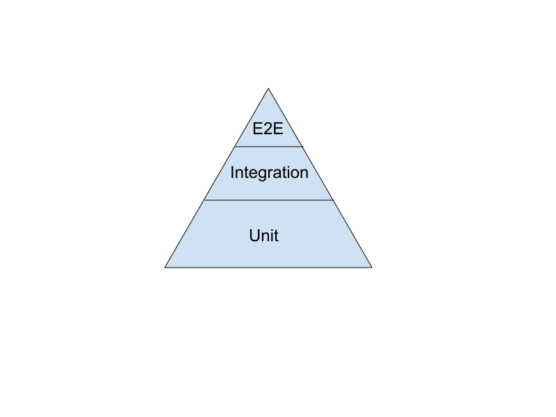
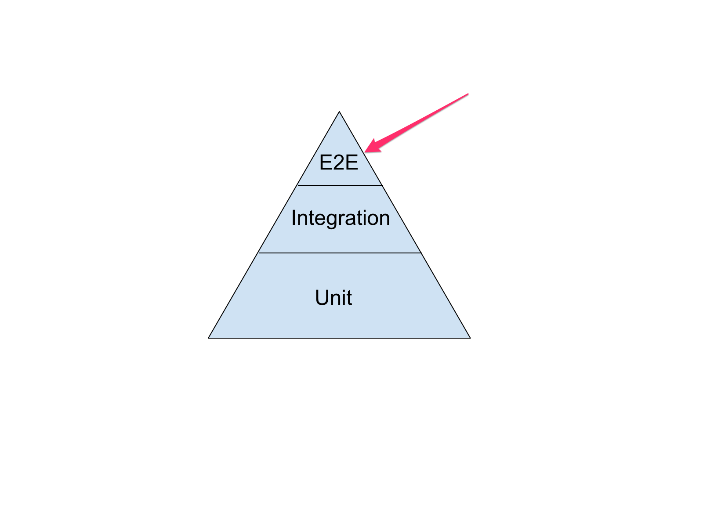
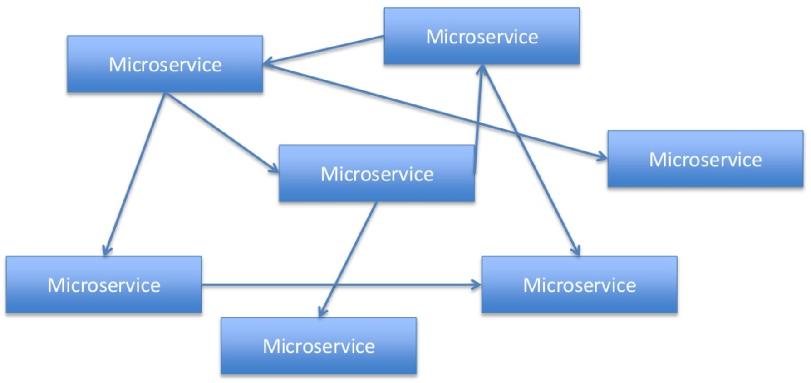
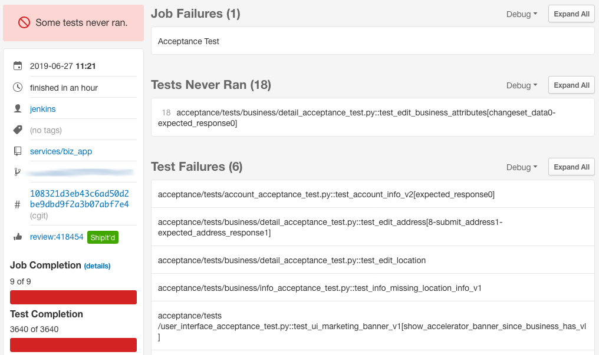
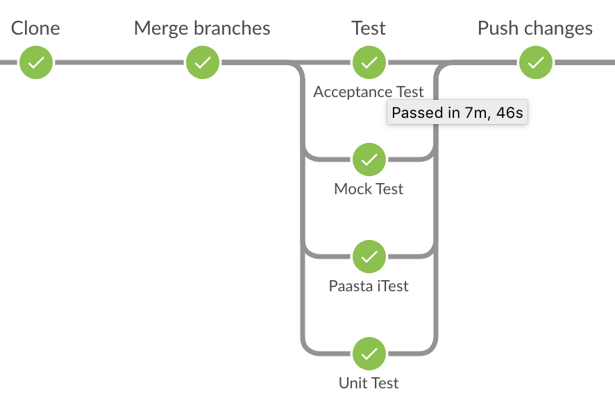
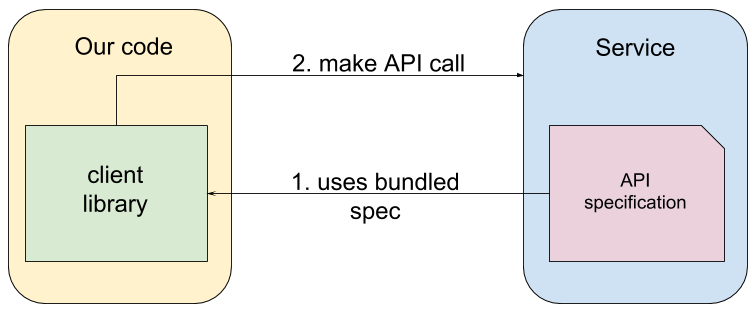
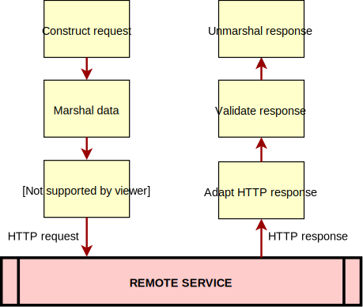
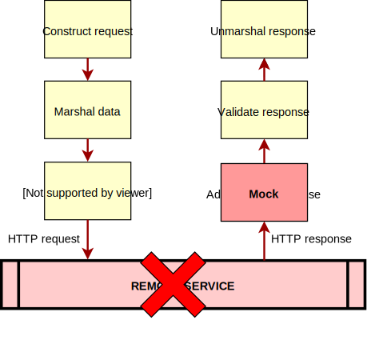

Testing Microservices:
Stephan Jaensch
journey through testing services at Yelp
Two years ago...
It started two years ago, when I gave another talk on testing at EuroPython 2017
The Testing Pyramid

Focused on the top end of the pyramid
The Testing Pyramid

Sometimes also called system tests, acceptance tests
The slowest, most expensive tests to run
They spin up each dependency, and each dependency's dependency...
Why end to end tests?

Source: https://www.slideshare.net/danveloper/microservices-the-right-way
distributed services means code split up across repositories
separated by network layer
E2E tests verify that everything works together
Unit tests lose value since your mocks might be wrong
Using stubs or fakes requires engineering effort, and again no guarantee as to their correctness
Our testing doesn't look like a pyramid: many unittests, a few integration, a lot of E2E
That's why we invested in E2E infrastructure, and why I gave a talk on managing state in dependencies and running E2E tests more quickly
Flakes

tests are not only slow, but also flaky
services spun up separately, each in its own Docker container
Need to create state in all dependant services
Docker failures, request timeouts...
High hardware requirements (extreme example, this machine was too small)
continued our investment
Improving speed and reducing flakiness

We're using Mountebank to record and replay service responses
Augmented it so it knows about which test is run, so we can run them in parallel
This is contract testing the way Martin Fowler describes it, with self-initializing fakes
Eliminates most of the flakiness due to timeout issues
Docker issues still there though
Also people have to run the full test suite for most changes
Contract testing
Contract Testing is writing tests to ensure that the explicit and implicit contracts of your microservices work as advertised.
Bob Reselman
In particular: consumer contract testing
Oftentimes people mean testing against a real instance or a stub / fake
But what if we could use mocks that are tested against the contract?
Like unit testing - in process, but with validated mock data
It turns out we can already validate the contract, for each service request
A service call at Yelp

Each service has an API specification in OpenAPI (formerly Swagger) format
Calls are done with a service-specific client library
Client libraries are versioned and ship with a specification from when they were created
You then make an API call using Python function calls
The main part of our service client libraries is the bravado library, which is Open Source
Anatomy of a client library request

Request constructed from Python function call
Validated using swagger_spec_validator, which uses jsonschema
Marshalled: converted from Python objects to wire format (JSON)
Response: adapt it for bravado, validate it, unmarshal it to Python
Inject mock in client library

So what if instead of mocking out the whole client library we just prevent it from sending a request, and provide mock response data?
We let most of the client library machinery run, and we take advantage of its validation capabilities
And since we know the contract, we can even provide a default response mock for free
Patching the client library
class TestExampleHappyhourClient():
@pytest.fixture(autouse=True)
def setup_teardown(self):
with patch_clientlib() as mock_client:
yield
def test_get_hours_simple():
hours = get_hours_simple()
assert hours == {
'SUN': {'time_start': 0, 'time_end': 0},
'MON': {'time_start': 0, 'time_end': 0},
...
}
All we need to do is patch the clientlib, and our test will execute without doing a network request
and it will return data according to the response specification, with default values
OpenAPI allows us to provide an example response in the specification, if it exists that data will be returned
Providing a mock response
class TestExampleHappyhourClient():
@pytest.fixture(autouse=True)
def setup_teardown(self):
with patch_clientlib() as mock_client:
mock_client.hours.getHours\
.set_return_value_and_status_code(
return_value={
'FRI': {'time_start': 21, 'time_end': 23},
'SAT': {'time_start': 21, 'time_end': 23},
'SUN': {'time_start': 21, 'time_end': 23},
},
status_code=200,
)
yield
We can also provide custom mock responses, and set custom HTTP status codes
Providing a side effect is also possible
What if the mock we provide as return value is wrong according to the specification?
Mocks with errors
jsonschema.exceptions.ValidationError:
'id' is a required property
Your request call and response mock will be validated against the contract
Conclusion
End to end tests don't scale infinitely
Contract tests are supposed to help
We can leverage existing infrastructure to do consumer driven contract testing (sort of)
We're relying on the fact that the service adheres to the specification
Did not go into detail what contract testing is
Tools like pact, or Postman
The other service could do backwards-incompatible changes, we wouldn't notice it with these tests
Unlike with these contract testing frameworks, we can't run these tests on the producer side
We developed and open-sourced a tool called swagger_spec_compatibility that helps detect backwards-incompatible specification changes
Questions?
sjaensch@yelp.com
- about E2E tests
- injecting state in dependencies
- making them run faster
- state now (slow -> docker build, flaky)
- why E2E?
- contract testing
- unit tests: is my code buggy or my mock wrong?
- but we have a contract: the API specification!
- and we have a validator
- can we use it to validate our mocks?
- limitations: contract might be out of date
- real contract testing is only transient
- conclusion: unit test speed with integration/E2E test confidence